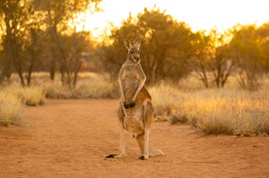
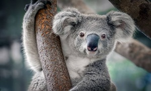
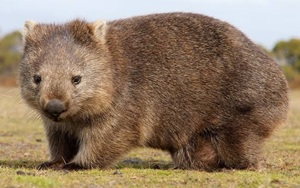
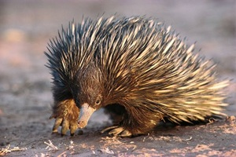

A Austrália é conhecida pelos seus animais únicos.
O canguru é um dos animais mais conhecidos da Austrália. Tem patas traseiras fortes, uma cauda comprida e desloca-se aos saltos. É um mamífero marsupial, ou seja, a cria desenvolve-se numa bolsa na barriga da mãe. Alimenta-se principalmente de plantas e erva.

O coala passa grande parte do dia a dormir, podendo descansar até 20 horas por dia. Alimenta-se principalmente de folhas de eucalipto e tem impressões digitais muito semelhantes às dos seres humanos. Apesar de ser muitas vezes chamado urso-coala, não é um urso, mas sim um marsupial.

O wombat é um animal de corpo robusto que vive em tocas subterrâneas escavadas por si. Uma das suas características mais curiosas é produzir fezes em forma de cubo. Além disso, consegue correr bastante depressa em curtas distâncias, apesar do seu aspeto arredondado.

A equidna é um mamífero coberto de espinhos que utiliza para se proteger dos predadores. É um dos poucos mamíferos do mundo que põem ovos. Alimenta-se sobretudo de formigas e térmitas, que captura com a sua língua comprida e pegajosa. As suas crias são conhecidas, em inglês, como puggles.
